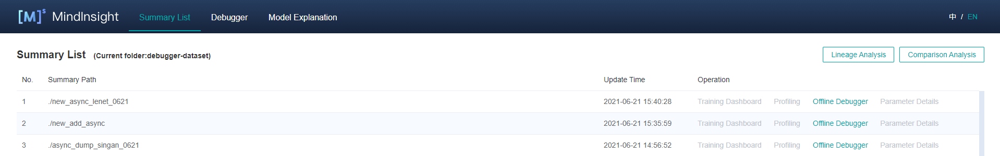
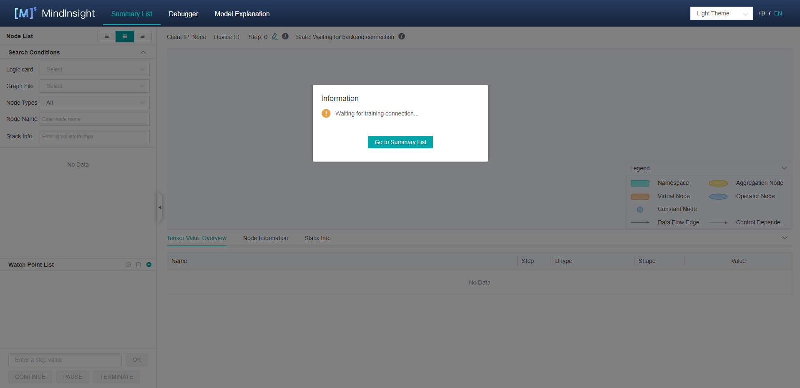
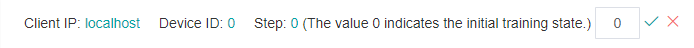

Using the Offline Debugger

Overview
This article describes how to use Debugger in offline mode.
Operation Process
Prepare dump data. For details about how to use the dump function, see Using Dump in the Graph Mode.
Start MindInsight and set summary-base-dir to the summary-dir(summary-dir is the father directory of the path in the dump configuration) of one training or the father directory of more training using startup parameters.
Find the offline debugger entry from the Summary list, and click Offline Debugger. The debugger UI is displayed, and debugging analysis starts.
Environment Preparation
Use the dump function of MindSpore to prepare offline data. For details about how to use the dump function, see Using Dump in the Graph Mode.
It should be noted that only one dump path can be included in a summary-dir. For example, if the path in the Dump configuration file is “/home/workspace/data/dump_dir” in one training, after the dump data of this training is stored, the other trainnings cannot set the path in the Dump configuration file as the children directory of “/home/workspace/data”.
Start MindInsight and set summary-base-dir to the summary-dir of one training or the father directory of more training. Then, you can query the offline debugger entry on the UI.
MindInsight startup command:
mindinsight start --port {PORT} --summary-base-dir {SUMMARY_BASE_DIR} --offline-debugger-mem-limit {OFFLINE_DEBUGGER_MEMORY_LIMIT} --max-offline-debugger-session-num {MAX_OFFLINE_DEBUGGER_SESSION_NUMBER}
Parameters are described as follows:
Name |
Attribute |
Description |
Type |
Default Value |
Range |
|---|---|---|---|---|---|
|
Optional |
Specifies the port number of the web visualization service. |
Integer |
8080 |
1–65535 |
|
Mandatory |
Specifies the upper one or two layers of a path in the Dump configuration. For example, if the path in the dump configuration file is set to |
String |
./ |
- |
|
Optional |
Specifies the maximum memory limit of a single offline debugger session. When the offline debugger cannot be executed due to insufficient memory, set it according to the device memory. |
Integer |
16*1024 |
6*1024~The upper limit of int32 |
|
Optional |
Specifies the maximum session number of the offline debugger. The session number refers to the amount of training jobs that can be debugged at the same time. |
Integer |
2 |
1~2 |
For details about more startup parameters, see MindInsight Commands.
Open MindInsight and access the debugger UI from the offline debugger entry.

Figure 1: Offline debugger entry
UI Introduction
The UI of the offline debugger is the same as that of the online debugger. For details about the online debugger UI, see Debugger UI Introduction.
Usage Example
After the debugger environment is prepared, open the debugger UI, as shown in the following figure:

Figure 2: Debugger waiting for training connection
At this point, the debugger is in a state of loading offline data.
Wait for a moment. A dialog box is displayed on the MindInsight UI, asking you whether to use the recommended watchpoints. The following procedures are the same as that for online debugging. Debugger Usage Example.
Compared with the online debugger, the offline debugger can reset the training step. As shown in Figure 3, click the edit icon on the right, and an edit box will appear, as shown in Figure 4. Enter the step id to be reset and click the tick icon.

Figure 3: Resetting the training step

Figure 4: Resetting the trainning step in edit status
Precautions
Scenarios:
The offline debugger does not support the CPU scenario currently.
The offline debugger supports the single-node multi-device scenario. To analyze the multi-node multi-device scenario, you need to summarize the data of multiple nodes.
The offline debugger does not support checking the initial weight.
The offline debugger does not support checking watchpoints in multi-graph scenario.
GPU scenario:
Different from the online debugger, the offline debugger does not support node-by-node execution.
If there are more than one dump files of the same tensor in the same directory, offline debugger will only show the latest tensor.
When using the offline debugger, make sure that the version numbers of MindInsight and MindSpore are the same.
Only watchpoints that have tensor values are rechecked.
The graph displayed by the debugger is the finally optimized execution graph. The called operator may have been integrated with other operators, or the name of the called operator is changed after optimization.
If the asynchronous dump data in the Ascend scenario is used, you can use the
convert_all_data_to_hostAPI of MindInsight DumpParser to convert the asynchronous dump data into the.npyfile to improve the data analysis efficiency. For details about how to use DumpParser, see DumpParser Introduction.